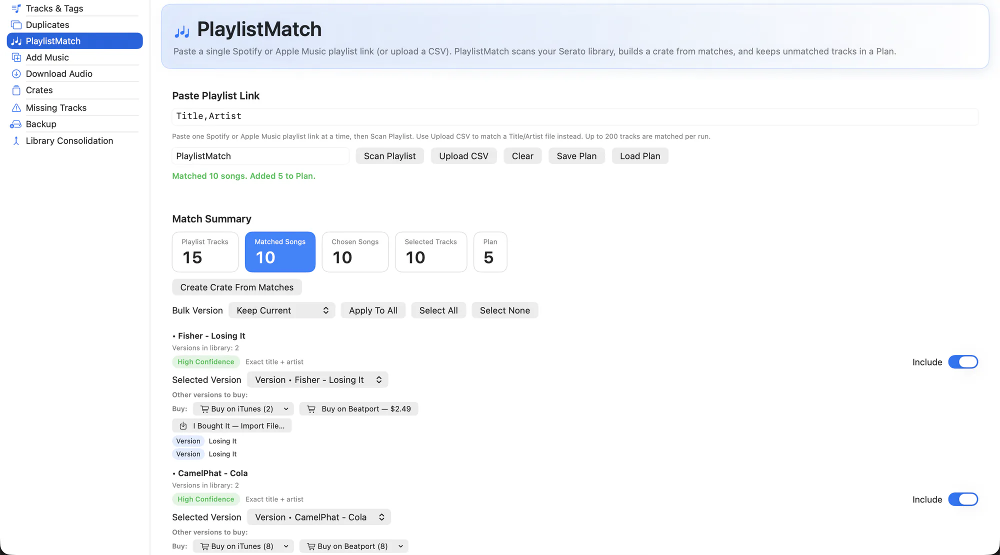

You hear a set, you find the playlist, and then you spend an hour working out which of those forty tracks you already have. PlaylistMatch does that part.
Paste a Spotify or Apple Music link, a CSV, or just a list of track names. Every entry is matched against your Serato library with a confidence score, matches become a crate, and everything you are missing goes into a plan you can work through.

What it does
- Takes any list. Spotify and Apple Music playlist URLs, CSV rows, or plain text pasted in.
- Confidence scoring. Each match shows how sure it is, and where you own several versions of a track you choose which one counts.
- Remix and version aware. Remix and version titles are matched against their library originals rather than being treated as different songs.
- Crate from matches. Turn everything you confirmed into a new crate in one step.
- A plan for the rest. Unmatched tracks stay in a queue so the ones you do not own yet are not just lost.
- Buy links that are real. Confirmed iTunes and Beatport listings, grouped by store with per-version options — not a search URL that might find nothing.
- Import what you bought. I bought it brings the purchased file into your library, and a Downloads-folder watcher offers to import finished downloads automatically.
- Download fallback. For tracks that cannot be bought, pull the audio from YouTube or SoundCloud, with music videos filtered out of the suggestions.
- Tagged from the title, not the channel. Downloads read the artist and title out of the video title, where they actually live. A channel name is never used as the artist or the album, and an unparseable title leaves the field empty rather than guessing.
How to use it
-
Paste the playlist
Drop in a link, a CSV, or a plain list of tracks.
-
Match
Review the results. Fix any low-confidence rows and pick versions where you own more than one.
-
Create the crate
Confirmed matches become a crate in your Serato library.
-
Work the plan
For the rest, use the buy links, then import each purchase back in.
Personalised Spotify mixes (Discover Weekly and similar) are flagged, because they are generated per-listener and cannot be read back exactly.
Related
Add Music
Get new files into your library and into the right crate, without the drag-and-drop dance.
Crates
Your whole crate tree, including smart crates and the hidden ones, with real stats.
Tracks & Tags
Browse the whole library, fix metadata in place, and fill thousands of empty fields in one pass.
Try it on your own library
Free and open source. Takes a backup before it touches anything.